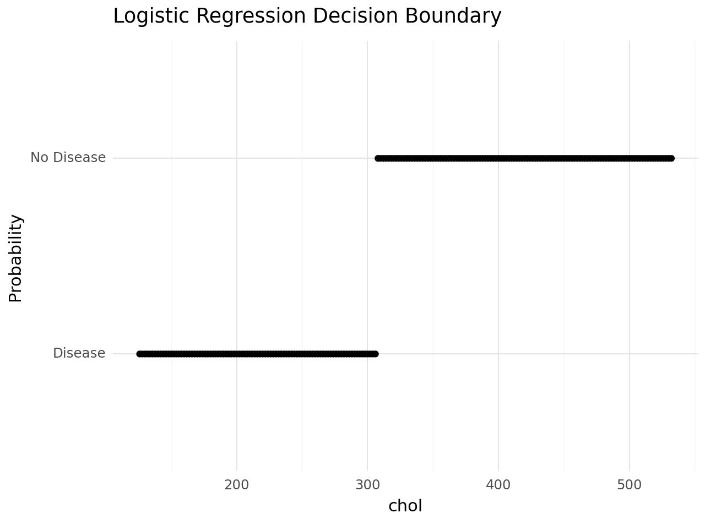
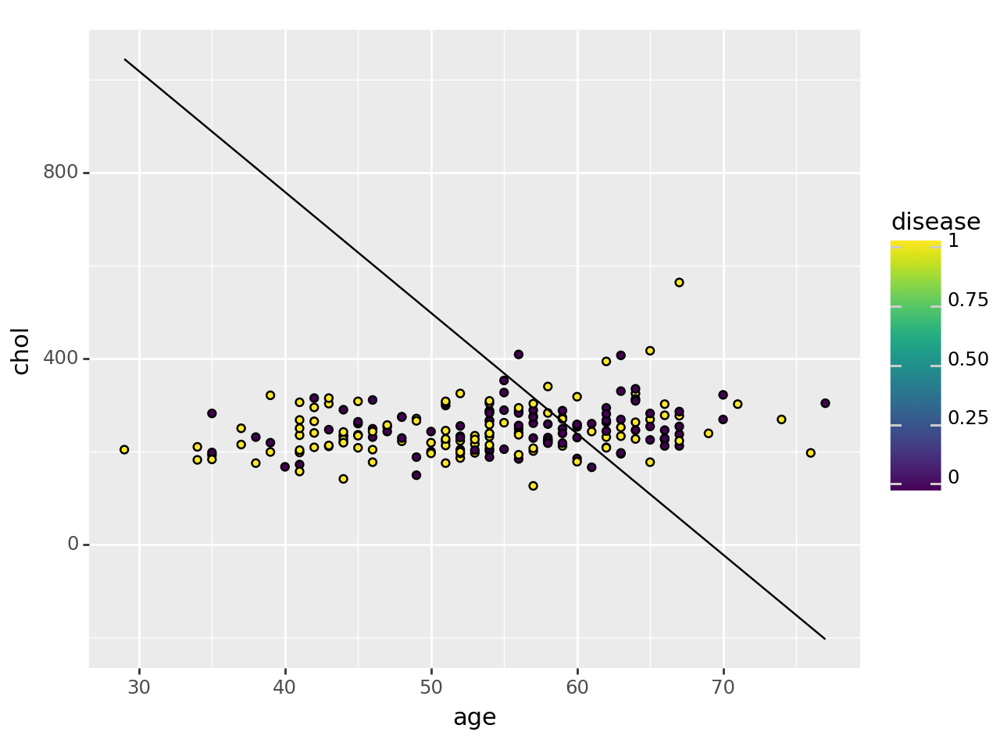
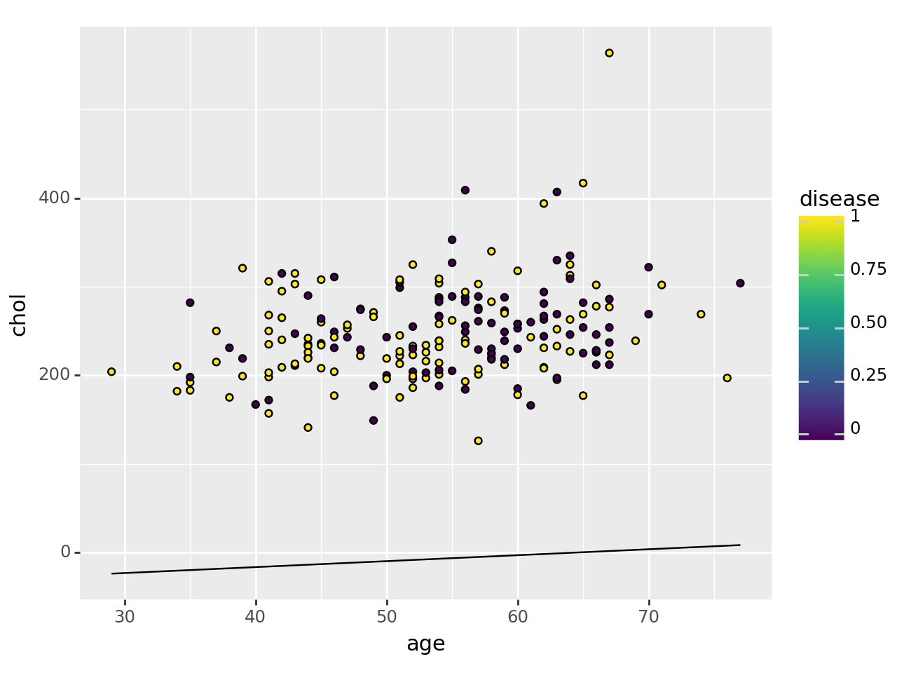

import pandas as pd
import numpy as np
from plotnine import *
from sklearn.pipeline import Pipeline
from sklearn.neighbors import KNeighborsClassifier
from sklearn.tree import DecisionTreeClassifier
from sklearn.linear_model import LogisticRegression
from sklearn.compose import ColumnTransformer
from sklearn.model_selection import train_test_split
from sklearn.metrics import accuracy_score, confusion_matrix, get_scorer_names
from sklearn.discriminant_analysis import LinearDiscriminantAnalysis
import matplotlib.pyplot as plt
from sklearn.svm import SVC
from sklearn.model_selection import GridSearchCVThe Data
At this link, you will find a dataset containing information about heart disease patients: https://www.dropbox.com/scl/fi/0vrpdnq5asmeulc4gd50y/ha_1.csv?rlkey=ciisalceotl77ffqhqe3kujzv&dl=1
A description of the original dataset can be found here: https://archive.ics.uci.edu/dataset/45/heart+disease (However, this dataset has been cleaned and reduced, and the people have been given fictious names.)
1. Logistic Regression
Fit a Logistic Regression using only age and chol (cholesterol) as predictors.
For a 55 year old, how high would their cholesterol need to be for the doctors to predict heart disease is present?
How high for the doctors to estimate a 90% chance that heart disease is present?
data = pd.read_csv("C:\\Users\\Tyler Clyde\\Documents\\GSB 544\\Practice Activities\\ha_1.csv")
data['disease'] = pd.get_dummies(data['diagnosis'], dtype='float')['Disease']
data = pd.DataFrame(data)logr = LogisticRegression()
X = data[['age', 'chol']]
y = data['disease']
logr_fit = logr.fit(X,y)
print(logr_fit.coef_)
print(logr_fit.intercept_)
#-0.04686_x + -0.0018_x2 + 3.24 = 0
# x2 = -26.03x + 1800[[-0.04686331 -0.00180124]]
[3.24011226]test_data = pd.DataFrame(
{'age': 55,
'chol': range(126, 534, 2)}
)
test_data| age | chol | |
|---|---|---|
| 0 | 55 | 126 |
| 1 | 55 | 128 |
| 2 | 55 | 130 |
| 3 | 55 | 132 |
| 4 | 55 | 134 |
| ... | ... | ... |
| 199 | 55 | 524 |
| 200 | 55 | 526 |
| 201 | 55 | 528 |
| 202 | 55 | 530 |
| 203 | 55 | 532 |
204 rows × 2 columns
X_test = test_data[['age','chol']]
y_pred = logr_fit.predict(X_test)probabilities = logr.predict_proba(X_test)[:, 1]
probabilities array([0.60722784, 0.60636831, 0.60550812, 0.60464728, 0.60378578,
0.60292365, 0.60206087, 0.60119746, 0.60033342, 0.59946875,
0.59860347, 0.59773757, 0.59687106, 0.59600394, 0.59513623,
0.59426792, 0.59339902, 0.59252953, 0.59165947, 0.59078883,
0.58991762, 0.58904584, 0.58817351, 0.58730062, 0.58642719,
0.5855532 , 0.58467868, 0.58380363, 0.58292805, 0.58205194,
0.58117532, 0.58029818, 0.57942054, 0.57854239, 0.57766375,
0.57678461, 0.57590499, 0.57502489, 0.57414431, 0.57326326,
0.57238175, 0.57149977, 0.57061734, 0.56973446, 0.56885114,
0.56796738, 0.56708319, 0.56619857, 0.56531353, 0.56442807,
0.5635422 , 0.56265592, 0.56176925, 0.56088217, 0.55999472,
0.55910687, 0.55821865, 0.55733006, 0.55644109, 0.55555177,
0.55466209, 0.55377206, 0.55288169, 0.55199097, 0.55109993,
0.55020855, 0.54931685, 0.54842484, 0.54753251, 0.54663988,
0.54574695, 0.54485372, 0.54396021, 0.54306641, 0.54217233,
0.54127799, 0.54038337, 0.5394885 , 0.53859337, 0.53769799,
0.53680237, 0.53590652, 0.53501043, 0.53411411, 0.53321757,
0.53232082, 0.53142386, 0.5305267 , 0.52962934, 0.52873179,
0.52783405, 0.52693614, 0.52603804, 0.52513978, 0.52424136,
0.52334278, 0.52244405, 0.52154517, 0.52064616, 0.51974701,
0.51884773, 0.51794833, 0.51704882, 0.51614919, 0.51524946,
0.51434963, 0.51344971, 0.51254969, 0.5116496 , 0.51074944,
0.5098492 , 0.5089489 , 0.50804854, 0.50714813, 0.50624767,
0.50534717, 0.50444664, 0.50354608, 0.50264549, 0.50174489,
0.50084428, 0.49994366, 0.49904304, 0.49814243, 0.49724183,
0.49634125, 0.49544069, 0.49454016, 0.49363967, 0.49273922,
0.49183881, 0.49093846, 0.49003817, 0.48913794, 0.48823778,
0.4873377 , 0.4864377 , 0.48553779, 0.48463797, 0.48373825,
0.48283864, 0.48193914, 0.48103975, 0.48014049, 0.47924136,
0.47834236, 0.4774435 , 0.47654479, 0.47564623, 0.47474783,
0.47384959, 0.47295152, 0.47205362, 0.47115591, 0.47025838,
0.46936104, 0.46846391, 0.46756697, 0.46667025, 0.46577374,
0.46487745, 0.46398139, 0.46308556, 0.46218997, 0.46129463,
0.46039953, 0.45950469, 0.45861011, 0.45771579, 0.45682175,
0.45592799, 0.45503451, 0.45414132, 0.45324843, 0.45235583,
0.45146354, 0.45057157, 0.44967991, 0.44878858, 0.44789757,
0.4470069 , 0.44611657, 0.44522658, 0.44433695, 0.44344767,
0.44255875, 0.4416702 , 0.44078203, 0.43989423, 0.43900682,
0.4381198 , 0.43723317, 0.43634695, 0.43546113, 0.43457572,
0.43369073, 0.43280617, 0.43192203, 0.43103832, 0.43015505,
0.42927223, 0.42838986, 0.42750794, 0.42662649])df = pd.DataFrame({'X_test': test_data['chol'], 'prob' : probabilities})
plot = (
ggplot(df, aes(x='X_test', y='prob')) +
geom_point(color='black') +
theme_minimal() +
labs(title='', x='chol', y='Probability')
)
print(plot)
df = pd.DataFrame({'X_test': test_data['chol'], 'y_pred': y_pred})
plot = (
ggplot(df, aes(x='X_test', y='y_pred')) +
geom_point(color='black') +
theme_minimal() +
labs(title='Logistic Regression Decision Boundary', x='chol', y='Probability')
)
print(plot)
2. Linear Discriminant Analysis
Fit an LDA model using only age and chol (cholesterol) as predictors.
For a 55 year old, how high would their cholesterol need to be for the doctors to predict heart disease is present?
lda = LinearDiscriminantAnalysis()
X = data[['age', 'chol']]
y = data['diagnosis']
X_train, X_test, y_train, y_test = train_test_split(X, y, test_size=0.25, random_state=1)
lda_fit = lda.fit(X_train,y_train)
lda_pred = lda_fit.predict(X_test)
print(lda_fit.coef_)
print(lda_fit.intercept_)
#0.03847x + -0.05726_x2 - 2.49 = 0
# x2 = 0.6718x - 43.49[[ 3.84666235e-02 -5.72576434e-06]]
[-2.49058199]X_test = test_data[['age','chol']]
y_pred = lda_fit.predict(X_test)df = pd.DataFrame({'X_test': test_data['chol'], 'y_pred': y_pred})
plot = (
ggplot(df, aes(x='X_test', y='y_pred')) +
geom_point(color='black') +
theme_minimal() +
labs(title='Logistic Regression Decision Boundary', x='chol', y='Probability')
)
print(plot)
3. Support Vector Classifier
Fit an SVC model using only age and chol as predictors. Don’t forget to tune the regularization parameter.
For a 55 year old, how high would their cholesterol need to be for the doctors to predict heart disease is present?
X = data[['age', 'chol']]
y = data['disease']
svc_pipeline = Pipeline([
("svc_classifier", SVC())
])
C = {'svc_classifier__C': [1, 5, 10, 15, 20, 25, 30, 40, 50, 60, 70, 80]}
gscv = GridSearchCV(svc_pipeline, C, cv = 5, scoring='accuracy')
gscv_fitted = gscv.fit(X, y)
pd.DataFrame(data = {"n": [1, 5, 10, 15, 20, 25, 30, 40, 50, 60, 70, 80], "scores": gscv_fitted.cv_results_['mean_test_score']})| n | scores | |
|---|---|---|
| 0 | 1 | 0.539024 |
| 1 | 5 | 0.563537 |
| 2 | 10 | 0.617561 |
| 3 | 15 | 0.637073 |
| 4 | 20 | 0.627317 |
| 5 | 25 | 0.622439 |
| 6 | 30 | 0.617683 |
| 7 | 40 | 0.622561 |
| 8 | 50 | 0.617805 |
| 9 | 60 | 0.603049 |
| 10 | 70 | 0.603049 |
| 11 | 80 | 0.593293 |
X = data[['age', 'chol']]
y = data['disease']
svc_pipeline = Pipeline([
("svc_classifier", SVC(C = 15))
])
svc_fit = svc_pipeline.fit(X,y)
support_vectors = svc_fit.named_steps['svc_classifier'].support_vectors_
dual_coefficients = svc_fit.named_steps['svc_classifier'].dual_coef_
# Print or analyze the support vectors and dual coefficients as needed
print("Support Vectors:")
print(support_vectors)
print("Dual Coefficients:")
print(dual_coefficients)Support Vectors:
[[ 60. 230.]
[ 62. 263.]
[ 63. 407.]
[ 51. 299.]
[ 41. 172.]
[ 62. 294.]
[ 54. 239.]
[ 58. 225.]
[ 67. 212.]
[ 56. 249.]
[ 60. 253.]
[ 50. 200.]
[ 58. 259.]
[ 44. 290.]
[ 57. 261.]
[ 52. 255.]
[ 57. 276.]
[ 55. 353.]
[ 57. 289.]
[ 59. 273.]
[ 61. 260.]
[ 60. 258.]
[ 52. 204.]
[ 66. 228.]
[ 57. 229.]
[ 56. 288.]
[ 48. 229.]
[ 56. 184.]
[ 62. 267.]
[ 66. 212.]
[ 63. 330.]
[ 50. 243.]
[ 46. 231.]
[ 47. 243.]
[ 58. 230.]
[ 46. 311.]
[ 40. 167.]
[ 56. 283.]
[ 46. 249.]
[ 54. 266.]
[ 61. 166.]
[ 64. 309.]
[ 38. 231.]
[ 42. 315.]
[ 62. 244.]
[ 65. 282.]
[ 55. 289.]
[ 66. 246.]
[ 59. 218.]
[ 54. 188.]
[ 49. 188.]
[ 64. 246.]
[ 54. 206.]
[ 60. 258.]
[ 56. 256.]
[ 57. 274.]
[ 67. 286.]
[ 51. 305.]
[ 53. 203.]
[ 64. 335.]
[ 55. 327.]
[ 67. 237.]
[ 56. 409.]
[ 49. 149.]
[ 63. 269.]
[ 54. 286.]
[ 48. 274.]
[ 60. 185.]
[ 62. 281.]
[ 58. 224.]
[ 65. 254.]
[ 63. 197.]
[ 45. 264.]
[ 52. 230.]
[ 59. 249.]
[ 65. 225.]
[ 35. 198.]
[ 43. 247.]
[ 39. 219.]
[ 58. 218.]
[ 54. 283.]
[ 67. 254.]
[ 35. 282.]
[ 59. 239.]
[ 59. 288.]
[ 55. 205.]
[ 60. 318.]
[ 43. 303.]
[ 66. 302.]
[ 44. 235.]
[ 64. 325.]
[ 39. 321.]
[ 42. 265.]
[ 54. 232.]
[ 66. 226.]
[ 53. 216.]
[ 64. 313.]
[ 48. 222.]
[ 58. 340.]
[ 44. 233.]
[ 66. 228.]
[ 65. 269.]
[ 45. 236.]
[ 65. 177.]
[ 54. 267.]
[ 69. 239.]
[ 63. 195.]
[ 61. 243.]
[ 47. 253.]
[ 59. 270.]
[ 45. 260.]
[ 74. 269.]
[ 48. 275.]
[ 52. 233.]
[ 58. 220.]
[ 57. 201.]
[ 65. 417.]
[ 59. 212.]
[ 51. 245.]
[ 50. 219.]
[ 54. 239.]
[ 71. 302.]
[ 66. 278.]
[ 45. 308.]
[ 76. 197.]
[ 64. 263.]
[ 49. 271.]
[ 54. 288.]
[ 54. 304.]
[ 52. 223.]
[ 57. 207.]
[ 47. 257.]
[ 63. 252.]
[ 56. 294.]
[ 67. 564.]
[ 49. 266.]
[ 52. 196.]
[ 44. 242.]
[ 62. 231.]
[ 54. 201.]
[ 56. 240.]
[ 41. 306.]
[ 54. 309.]
[ 53. 234.]
[ 64. 227.]
[ 58. 283.]
[ 57. 126.]
[ 43. 315.]
[ 55. 262.]
[ 53. 226.]
[ 45. 234.]
[ 67. 277.]
[ 53. 197.]
[ 54. 258.]
[ 41. 250.]
[ 51. 222.]
[ 62. 209.]
[ 57. 303.]
[ 54. 214.]
[ 62. 208.]
[ 52. 325.]
[ 63. 233.]
[ 56. 236.]
[ 51. 308.]
[ 62. 394.]
[ 67. 223.]
[ 51. 213.]
[ 52. 199.]
[ 44. 141.]
[ 60. 178.]
[ 56. 193.]
[ 46. 243.]
[ 41. 268.]
[ 51. 227.]
[ 42. 295.]]
Dual Coefficients:
[[-15. -15. -15. -15. -15.
-15. -15. -15. -15. -15.
-15. -15. -15. -15. -15.
-15. -15. -15. -15. -15.
-15. -15. -15. -15. -15.
-15. -15. -15. -15. -15.
-15. -15. -15. -15. -15.
-15. -15. -15. -15. -15.
-15. -15. -15. -15. -15.
-15. -15. -15. -15. -15.
-15. -15. -15. -15. -15.
-15. -5.08764303 -15. -15. -15.
-15. -15. -15. -15. -15.
-15. -15. -15. -15. -15.
-15. -15. -15. -15. -15.
-15. -15. -15. -15. -15.
-15. -15. -15. -15. -15.
-15. 15. 15. 15. 15.
15. 0.56169589 15. 15. 15.
15. 15. 15. 15. 15.
15. 15. 15. 15. 15.
15. 15. 15. 15. 15.
15. 15. 15. 15. 15.
15. 15. 15. 15. 15.
15. 15. 15. 15. 15.
15. 15. 15. 15. 15.
15. 15. 15. 15. 0.27630333
15. 9.0683117 15. 15. 15.
15. 15. 15. 15. 15.
15. 11.28803364 15. 15. 15.
15. 15. 15. 15. 12.1641552
15. 15. 15. 15. 15.
15. 15. 15. 15. 15.
15. 15. 15. 15. 1.72914328
15. 15. 15. 15. 15. ]]X_test = test_data[['age','chol']]
y_pred = svc_fit.predict(X_test)df = pd.DataFrame({'X_test': test_data['chol'], 'y_pred': y_pred})
plot = (
ggplot(df, aes(x='X_test', y='y_pred')) +
geom_point(color='black') +
theme_minimal() +
labs(title='Logistic Regression Decision Boundary', x='chol', y='Probability')
)
print(plot)
4. Comparing Decision Boundaries
Make a scatterplot of age and chol, coloring the points by their true disease outcome. Add a line to the plot representing the linear separator (aka decision boundary) for each of the three models above.
#Log Model
(ggplot(data, aes(x='age', y='chol', fill='disease')) +
geom_point()
+ geom_line(aes(y=-26.03 * data['age'] + 1800))
)

<Figure Size: (640 x 480)>#LDA Model
(ggplot(data, aes(x='age', y='chol', fill='disease')) +
geom_point()
+ geom_line(aes(y= 0.6718 * data['age'] - 43.49))
)
<Figure Size: (640 x 480)>